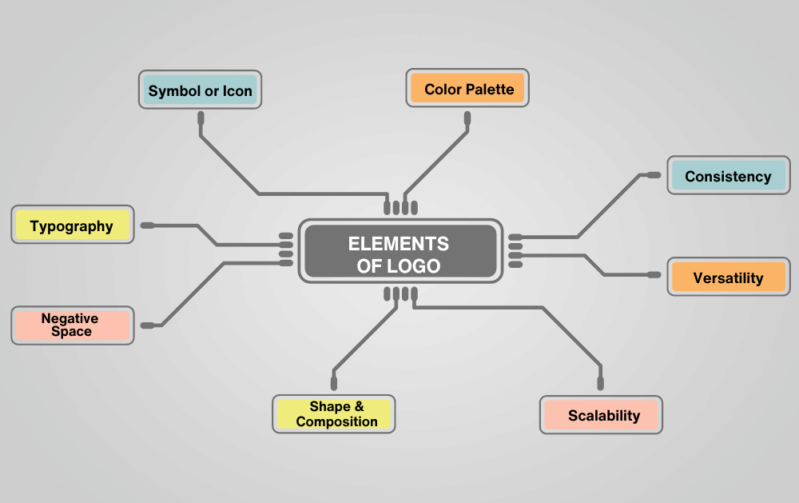
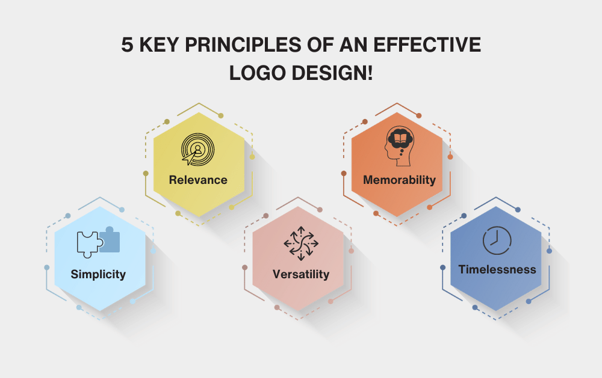
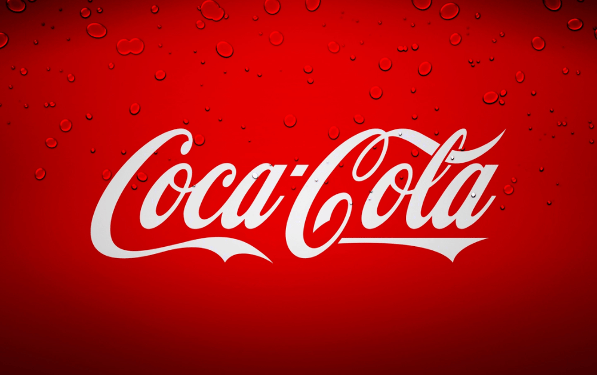
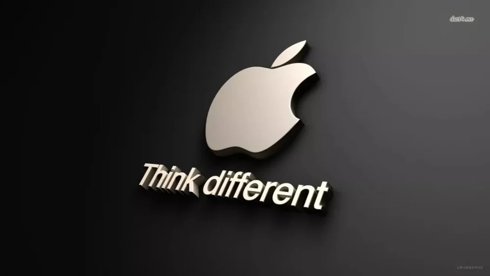
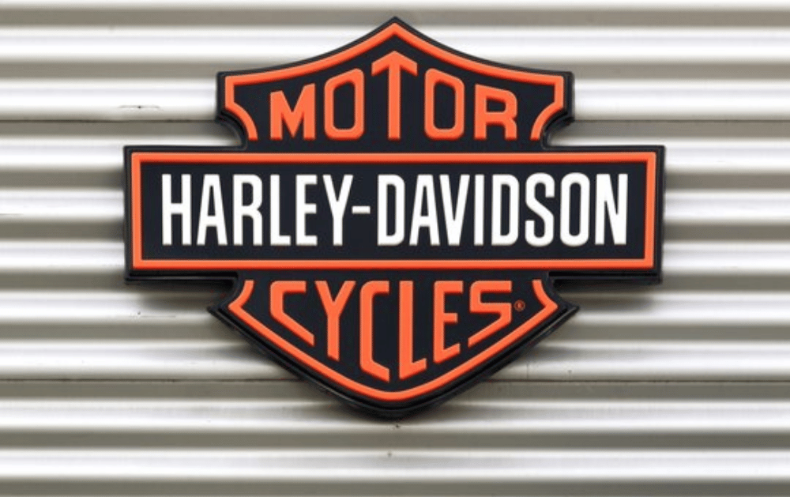
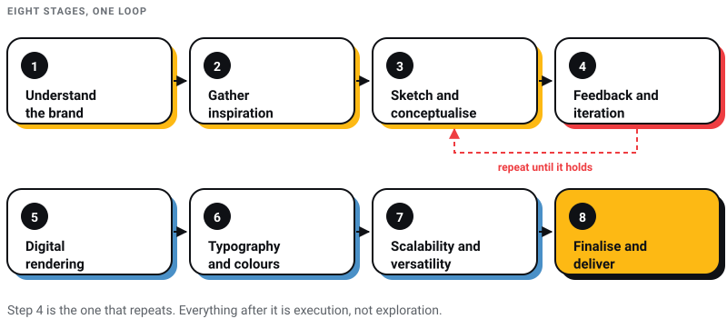
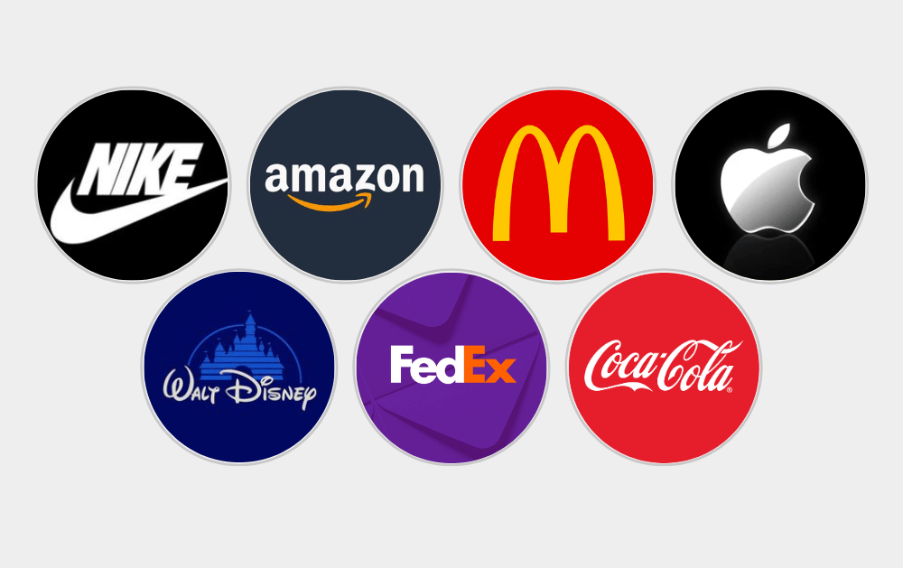

Branding
Branding
13 Top Must-Read Books for Web and Graphic Designers
From small-time gigs to booming creative industries, web and graphic designers have taken centre stage. Whether you’re a rookie or a design virtuoso…

The argument I have most often on a logo project is about how many concepts the client gets to see. They arrive expecting three, or five, or the dozen a marketplace freelancer promised them. I would rather present one, with the reasoning attached, and a second only where there is a genuine strategic fork in the brief. A pile of options is not generosity. It is a designer declining to have an opinion, and it moves the decision to the person in the room who did none of the research.
I run Pixel Street, a design and branding studio in Salt Lake, Kolkata, and we design and build for brands including Coca-Cola, ITC and Marico. So this is a process page written by someone who has to sit in the review meeting afterwards. I have tried to write down where each step actually goes wrong rather than what it is called.
The short version: a logo is a signature, not a story. Its job is to be recognised as yours — quickly, at any size, in one colour, for years. Everything the client wants it to say, the values and the mission and the arrow that secretly means growth, belongs to the brand built around it, and the mark collects the credit by association. A mark that needs a paragraph of explanation has already lost, because the paragraph does not get printed on the box.
A logo is assembled from a small number of parts: a symbol, a wordmark, or both, set in a typeface and locked to a colour. That is the whole vocabulary.

Everything below is about the order in which you make decisions about those parts, and about the three or four points in that order where projects reliably fall over.
A good logo is simple, memorable and enduring. A bad one is overly complicated, busy, or borrowed. A great logo stays recognisable through changes in ownership, management and taste.
Two things worth saying plainly, because they get repeated as if they were findings. Design it in black and white first and it has to work at favicon size are craft heuristics, not research results. Nobody ran a study. They survive because they are cheap tests that catch expensive mistakes: strip the colour and you find out whether the shape is doing any work, and shrink it to sixteen pixels and you find out how much detail was decoration. I apply both on every project and I would not pretend either is science.

Appropriateness: A great logo is appropriate for its intended purpose. It is designed with a specific audience and message in mind, effectively conveying the right vibe and feelings associated with the brand. Take Nike’s iconic “swoosh” logo, for example. It represents speed, motion, and the courage to just go for it without hesitation. It perfectly captures the brand’s essence and resonates with its target audience.
Distinctiveness and Memorability: A remarkable logo stands out from the crowd and leaves a lasting impression. It has a unique quality that sets it apart from other logos in the same industry. Think of Apple’s bitten apple logo. It’s simple yet instantly recognizable. It has become synonymous with the brand and is etched in the minds of people worldwide.
Simplicity: The beauty of a good logo lies in its simplicity. It should be easily remembered and reproduced without any distortion. A simple logo is versatile and can be effectively used across different materials and platforms. Avoid overly complicated designs that might look impressive initially but lose their impact when scaled down or printed on various surfaces.
Versatility: It has to hold together in one colour, reversed out of black, embroidered, engraved and at the size of a browser tab. A mark that only works in the one gradient it was born in is a graphic, not an identity.
Timelessness: This is the one clients are least willing to pay for and most annoyed to lose. If a mark is legible as belonging to a particular year, it will be illegible as belonging to any other. Chasing the current style is the most expensive decision available, because the bill arrives five years later as a rebrand.
Those five pull against each other, and the tension is the job. Distinctiveness pushes towards complexity; simplicity pushes back. Getting the balance right is what you are paying a designer for.
There are five forms in general use. The choice is mostly determined by the name you have been given, not by taste.
Wordmark logos consist of the brand name written in a stylized and visually appealing way. They rely solely on typography to convey the brand’s identity. Wordmarks are effective when the brand name itself is distinctive or when typography can express the brand’s personality.
Example: The Coca-Cola logo is a famous wordmark logo with its unique and recognizable script font.

Source: dribbble.com
Lettermark logos, also known as monogram logos, use the initials or acronym of the brand name to create a visually appealing and memorable symbol. This type of logo is particularly useful when the brand name is lengthy or when the initials are widely recognized.
Example: The logo of IBM (International Business Machines) is a well-known lettermark logo that features the brand’s initials.

Symbol logos use a visually distinctive icon or symbol to represent the brand. These logos rely on the power of imagery to create a strong visual association with the brand. Symbol logos are effective when the image can communicate the brand’s values or when the symbol becomes synonymous with the brand itself.
Example: The Apple logo is a simple and iconic symbol logo that represents the brand’s innovative and user-friendly products.

Combination logos combine both text and symbol elements to create a comprehensive representation of the brand. This type of logo allows for flexibility and can be used with or without the text portion, depending on the context.
Example: The Nike logo is a combination logo that features the iconic “swoosh” symbol alongside the brand name.

Emblem logos incorporate the brand name and symbol within a single unified design. They often have a classic and traditional look, resembling a badge or seal. Emblem logos are commonly used by government organizations, educational institutions, and sports teams.
Example: The Harley-Davidson logo is an emblem logo that features a shield shape with the brand name and a symbolic image.

A long or generic name pushes you towards a lettermark or a symbol. A short, distinctive one earns a wordmark. Deciding this early saves weeks.
Here’s a comprehensive and detailed process behind crafting exceptional logos that leave a lasting impact:

The logo design process begins with a thorough exploration of the brand. Designers immerse themselves in understanding the brand’s core values, mission, target audience, and unique selling points. By grasping the brand’s personality, they can create a logo that effectively communicates its story and resonates with its intended audience.
To initiate your client research, here are a few insightful questions you can begin with:
The answer that actually changes the drawing is the fourth one. Everything else tells you what the client feels about themselves; competitors tell you what space is left.
Competitive Analysis
Print the competitors' marks in a grid, in grey, at the same size. Two things fall out immediately: the cliché the category has agreed on — every logistics company has a swoosh, every clinic has a leaf, every fintech has a rounded lowercase geometric sans — and the shape nobody has taken. Differentiation is not being more creative than the others. It is looking different from them in a row, which is the only place a customer will ever see you.
In addition to competitor analysis and thorough brand research, you can find inspiration, such as design blogs, social media, and relevant publications. Finding inspiration is a continuous journey for designers.
Here are some of our handpicked websites and sources where you can find logo design inspiration:
Behance: Adobe's portfolio platform, where designers showcase finished identity work from around the world.
Dribbble: Three b's, and worth spelling correctly before you go looking. A community of designers posting work in progress and finished marks.
Logo Design Love: David Airey's blog, running since 2008, on logo projects and the reasoning behind them.
LogoLounge: A searchable archive of marks by industry, style and designer, plus Bill Gardner's annual logo trend report.
Pinterest: Broad rather than deep. Useful for mood, close to useless for craft, and the place most client mood boards come from.
Designspiration: An image and colour search engine across design disciplines, which makes it better than most for finding a palette rather than a picture.
Brand New: Armin Vit and Bryony Gomez-Palacio's identity review site, updated daily. This is the one I actually read, because it argues about whether a redesign was any good instead of just showing it.
Print: Communication Arts, published since 1959 and still running six issues a year, and the LogoLounge book series. Note that LogoLounge publishes books, not a magazine, whatever the rest of the internet says.
One warning about all of them. These archives are where marks get judged as pictures, at a size and in a context no customer will ever see. They are useful for craft and dangerous for direction. Do not let a client browse one before the brief is agreed.
Now comes the exciting part—translating ideas into sketches and rough concepts. Sketching is where ideas begin to take shape. It’s a process of translating abstract thoughts into visual representations. Designers use paper, sketchbooks, or digital tools to explore different concepts, experiment with shapes, symbols, and typography. Sketching allows designers to quickly iterate and explore a range of possibilities without being constrained by technical aspects.
Sketching offers designers the freedom to explore various visual directions. It allows them to quickly capture ideas, try out different compositions, and experiment with different design elements. Sketching helps in brainstorming and refining concepts by visually assessing their potential.
Narrowing down, and who not to ask
Once there are sketches on the page, pick the three that keep pulling your eye back and set the rest aside. Then be careful about the next step, because the standard advice here is bad. Showing drafts to friends, family and colleagues does not test a logo. It collects taste, from people whose taste you already know, on a question they were not briefed on. What comes back is a popularity contest between shapes, and the shape that wins is usually the safest one.
If you are going to show it to anyone outside the project, show it the way it will actually be met: small, in passing, next to competitors, on a phone. Ask what they think the company does. Do not ask which one they like.
Refining Your Chosen Sketch
Once you have the sketch you want to take forward, go back to the words from the research stage and work out which of them the drawing is not yet carrying. Use those to push the sketch. Elements you liked in the concepts you dropped can usually be folded in — most good marks are an idea from one sketch built with the geometry of another.
Client feedback is where logo projects are won and lost, and almost none of the damage comes from clients being wrong. It comes from the question they are asked. What do you think? invites taste. Does this do the job we agreed in the brief? invites judgement. The first question produces a request to make the blue bluer. The second produces a decision.
Three things that have consistently kept our reviews useful:
Negative feedback is the cheap kind. A client saying the mark feels cold six weeks before launch costs an afternoon. The same client saying it after the signage is printed costs a great deal more.
Once the initial concepts are sketched, designers transition to vector software to refine their chosen concepts. Adobe Illustrator remains the default, and Sketch is still shipping, though it is Mac-only in practice, so check that before you standardise a team on it. Whatever you use, the requirement is the same: the mark has to end up as vector outlines, not as pixels.
Digital is where the shape gets made honest. Curves that looked confident in pencil turn out to be three different radii; the counter in the letter you were proud of turns out to fill in at small sizes. Expect the drawing to get worse before it gets better.
What the software is actually for, in order:
Most of a wordmark is typography, so most of the decisions in this step are typographic ones. Three that matter:
One caveat on the standard advice, because I have written about it at length in our guide to the principles of typography: the rule that serifs are more readable in print and sans-serifs on screen has no research behind it. Serif and sans are a tonal choice. Baskerville or Bodoni may well be right for a luxury mark — but for what they say, not because they are easier to read.
Colour comes after the shape works in black. The most useful question is not what an individual colour means, it is where the mark has to live: an Indian brand that will end up on a hoarding in daylight, a WhatsApp display picture and a single-colour rubber stamp has narrower colour choices than a brand that only exists on a website. Be sceptical of colour-psychology charts, which are largely cultural rather than universal, and check the palette against whatever the brand's category already looks like. If four competitors are blue, the fifth blue is not a decision.
This is the step that separates a mark from a picture, and it is the one a client is least equipped to judge in a review, because in a review the logo is enormous and on a white slide. In life it will be a 16-pixel favicon, an embroidered chest patch, a screen-printed carton, a UPI QR code sticker and a signboard seen from a moving car.
What actually survives scaling:
Where a mark genuinely will not hold up small, the answer is a responsive set — the full lockup for large use, a reduced version that drops the tagline, and a standalone symbol for avatars and app icons — with a written rule for which one goes where. That is a legitimate solution. Shrinking the full lockup and hoping is not.
Finalizing a logo involves more than just creating the design.
Preparing Logo Files and Formats:
Creating a Style Guide:
A style guide is the document that decides whether the mark survives contact with everyone who is not you: the printer, the sign painter, the intern making a Diwali post, the agency that takes over in three years. Ours are short on purpose, because a forty-page PDF gets read by nobody.
A few marks worth looking at properly, with the parts that usually get told wrong corrected.

Nike: The “swoosh” was drawn in 1971 by Carolyn Davidson, then a student at Portland State University, who billed Phil Knight thirty-five dollars for the job. Knight's reported verdict at the time was that he did not love it but it might grow on him. Nike gave Davidson stock years later. I keep that story to hand for clients who believe the fee determines the outcome, in either direction.
Apple: The Apple logo is a sleek and minimalistic symbol of a bitten apple. It is a prime example of a symbol logo that conveys simplicity, elegance, and the brand’s commitment to cutting-edge technology and design.
McDonald’s: The golden arches of the McDonald’s logo have become iconic worldwide. The logo is bold, friendly, and instantly associated with the fast-food chain, making it memorable and easily recognizable.
Coca-Cola: Not a font, which is worth correcting because everyone repeats it. It is lettering, written out in 1886 by Frank Mason Robinson, Pemberton's bookkeeper, who also proposed the name on the grounds that two Cs would look well in advertising. He adapted the Spencerian penmanship a bookkeeper of that period would have been taught. It has been essentially the same mark since.
FedEx: The arrow in the negative space between the “E” and the “x” was designed in 1994 by Lindon Leader at Landor Associates, and by his own account he found it well into the process rather than setting out to hide it. That is the honest lesson in it: the good idea usually turns up after the obvious ones are exhausted.
Amazon: The Amazon logo features an arrow that starts from the letter “A” and ends at the letter “Z,” implying that the company offers a wide range of products from A to Z. This simple yet creative design element communicates the brand’s vast selection and customer-centric approach.
Disney: Two marks, routinely described as one. The signature-style “Walt Disney” script is the wordmark, seen on screen from Snow White and the Seven Dwarfs in 1937. The castle belongs to the Walt Disney Pictures film logo, introduced in 1985. Useful to keep straight, because it is a clean example of a company running a wordmark and a divisional lockup side by side without either weakening the other.
Worth noticing what these have in common, because it is not cleverness. Every one of them has been used relentlessly, in the same form, for decades. That is the variable doing most of the work. A merely good mark used consistently for twenty years beats a brilliant one that gets redrawn every time a new marketing head arrives — which, if you are choosing between a mark you love and a mark your organisation can actually stick to, is the more useful thing to know.
If you take one thing from this, take the order. The expensive mistakes on a logo project all happen before anyone opens the software: an unclear brief, an undefined decider, and a client who wants a logo when what they need is a brand. Sketching, refining and delivering are craft problems, and craft problems have solutions.
The second thing is that the logo is the smallest part of the identity and gets blamed for all of it. If sales are flat, the mark is rarely why. Before you redraw anything, it is worth reading our complete branding process and the guide to building a brand strategy, because a logo made without those is a signature on a blank page. If the mark genuinely has aged out, the rebranding roadmap covers what changing it actually costs across every place it is printed.
At Pixel Street we design identities from a studio in Salt Lake, Kolkata, for brands including Coca-Cola, ITC and Marico. If you are about to commission a mark, the most useful thing you can bring to the first meeting is not a Pinterest board. It is a clear answer to who this is for and what it has to survive.
17 min read 11 cited sources Branding
Author
Khurshid Alam is the founder of Pixel Street, an AI-native design & development studio. Design thinking on weekdays and spreadsheets on weekends.
He writes about growth, design, and AI, mostly because someone has to say the quiet parts out loud.
Branding
From small-time gigs to booming creative industries, web and graphic designers have taken centre stage. Whether you’re a rookie or a design virtuoso…
 Branding
Branding
Hey there! Have you ever watched a commercial that made you smile, feel inspired, or even brought you to tears?
 Branding
Branding
Hey there! Have you ever wondered how some ads just make you want to buy something right away? Or how a website convinces you to click a button and…
 Branding
Branding
Photoshop is a powerhouse for graphic designers, photographers, and digital artists. Yet, with the right plugins, you can improve your work by a great…